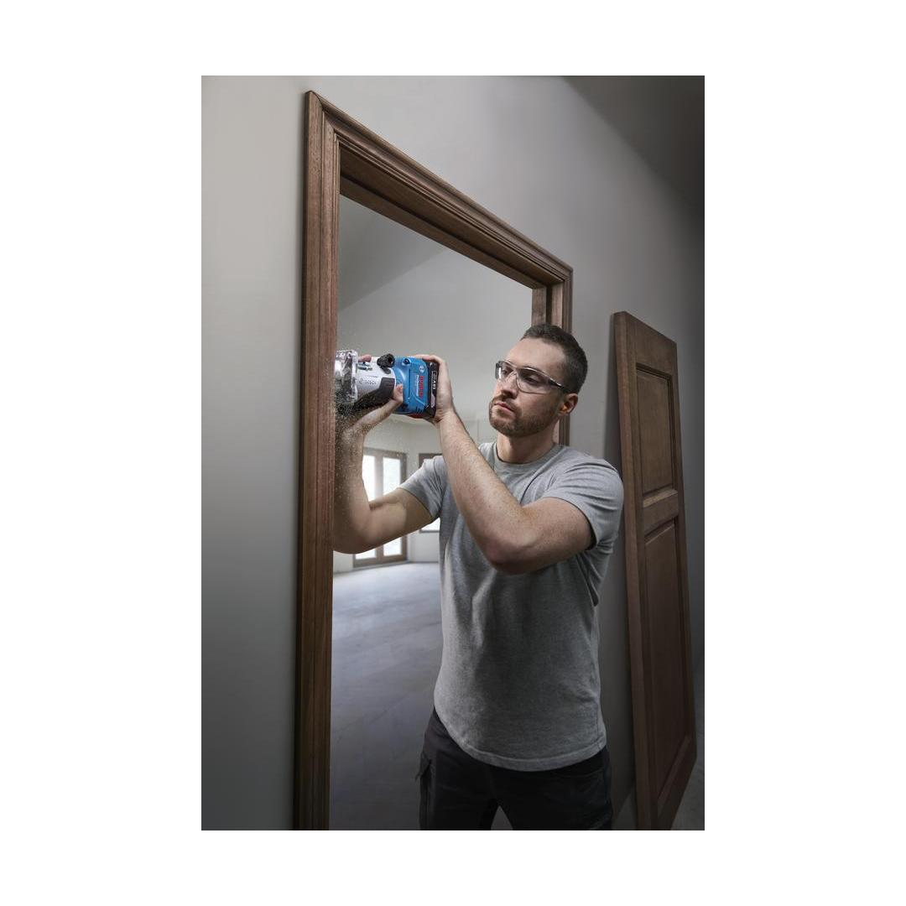
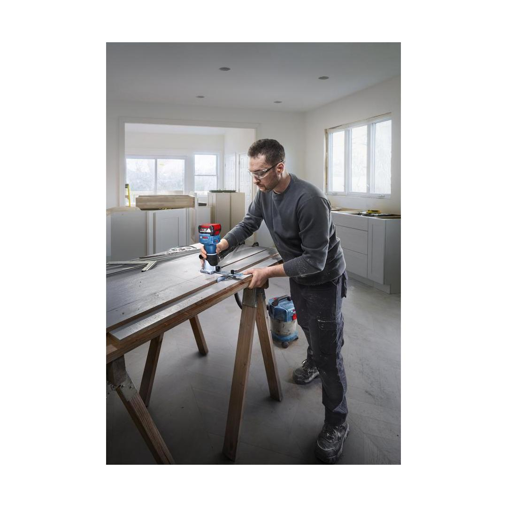
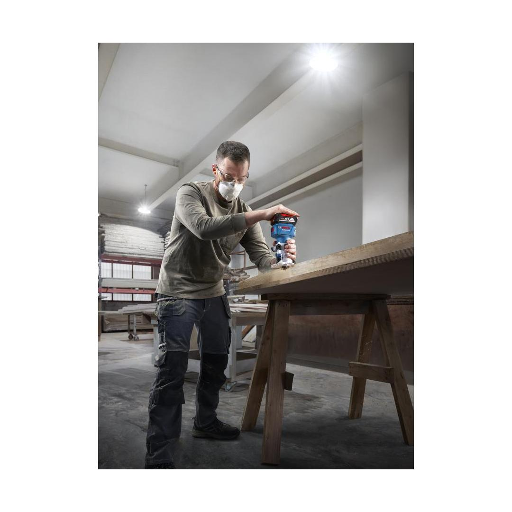
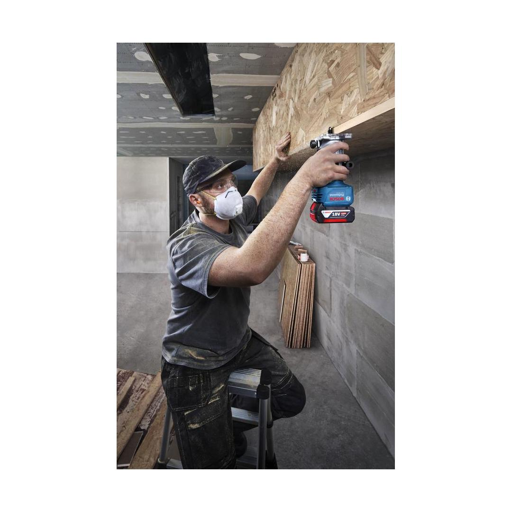
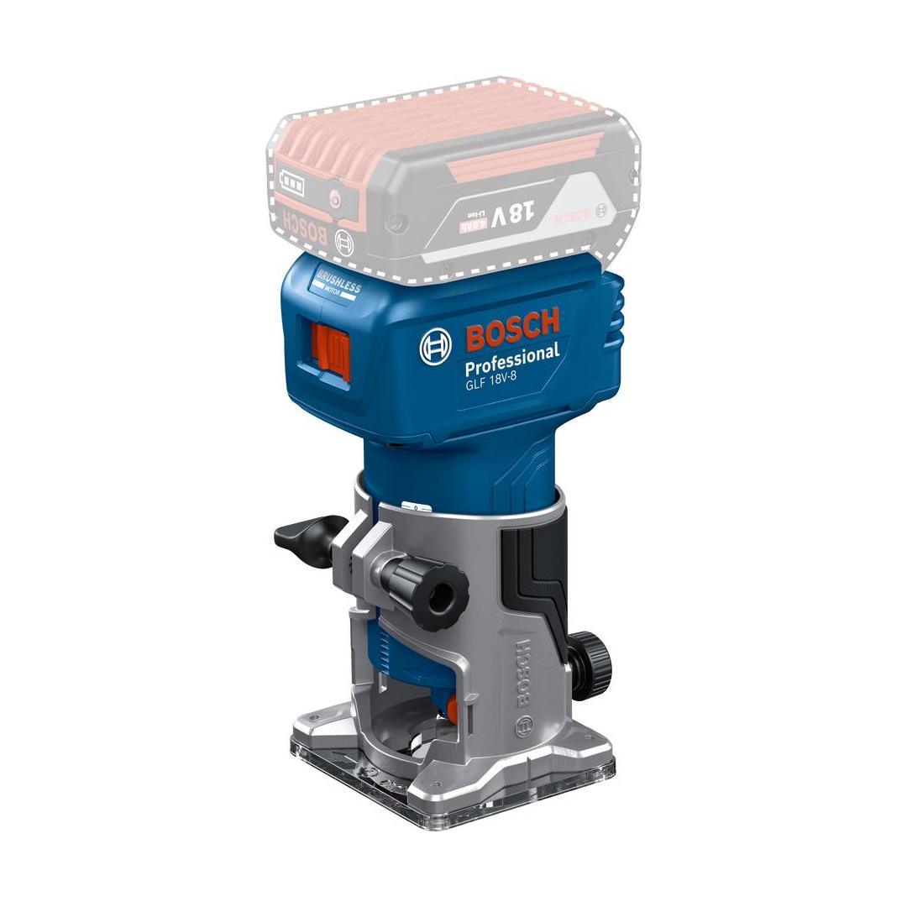
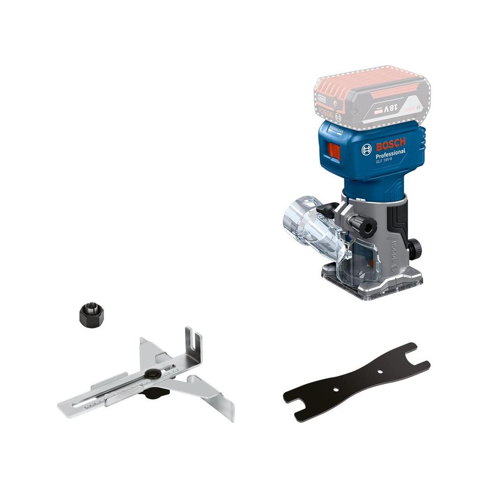

06016C60L0







Whether you’re trimming edges, making grooves, or profiling templates, you want a cordless router that is powerful enough to handle all these applications. Our GLF 18V-8 Professional router has sufficient power for your needs, enabling faster work and smoother routing – thanks to its strong 18 V brushless motor. The constant speed function provides a stable cutting speed that ensures a better finish. And you don’t need to worry about overheating issues arising after a short time thanks to the optimised cooling ventilation design.
| Tool dimensions (width) |
106 mm |
| Tool dimensions (length) |
90 mm |
| Tool dimensions (height) |
188 mm |
| Battery voltage |
18.0 V |
| No-load speed |
10,000 – 30,000 rpm |
| Compatible collet diameters |
6 mm 1/4'' 8 mm |
| Weight excl. battery |
1.1 kg |
Affordable 18V laminate trimmer: The budget-friendly solution for edge profiling and laminate trimming specialists
The GLF 18V-8 Professional cordless router is the go-to tool for edge trimming, grooving, template trimming, and profiling. It handles the same applications as your corded palm router, but with more ease by being cordless.
Purpose-built surface and edge routing vacuum adaptors are provided in the standard scope of supply to enable highly efficient dust collection, in all situations. The included parallel guide provides the added versatility for light-duty groove routing, while an L.E.D light illuminates the cutting area for improved visibility.